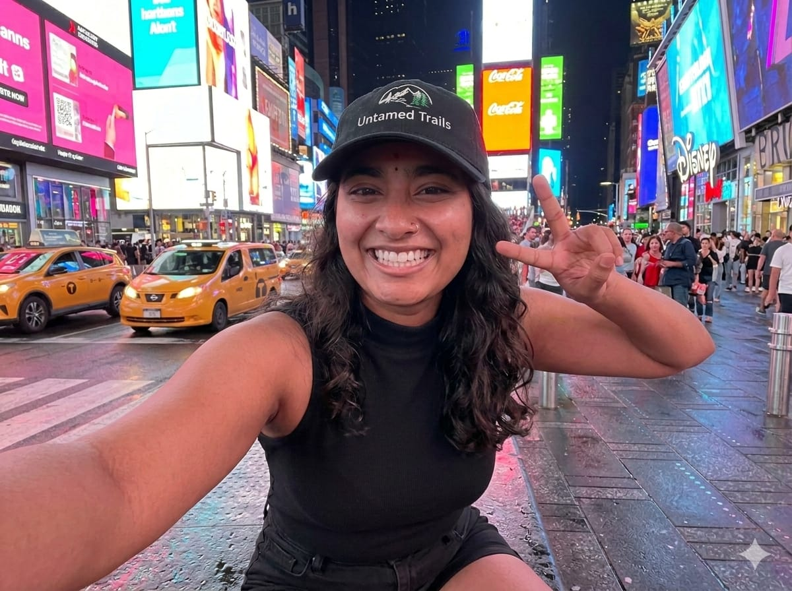

Hi, I’m Vaishnavi. Untamed Trails started as a personal dream when I began traveling solo during my college days. What began as curiosity slowly became passion. I realised travel was not just about destinations, but about transformation. The mountains taught me resilience, beaches taught me calmness, and adventures taught me courage. Over time, friends and family began asking me to plan trips for them. That is when the idea of building a platform that encourages everyone to explore was born.
Travel expands the way we see the world. It pushes us beyond comfort zones and introduces us to cultures, languages, and lifestyles we may never encounter otherwise. It builds empathy, independence, and confidence. Whether you travel solo, with family, or with friends, each journey leaves you with stories that shape who you become. Travel is not an expense; it is an investment in experiences, learning, and memories that last forever. Through Untamed Trails, the mission is simple — to make travel accessible, meaningful, and unforgettable for everyone.